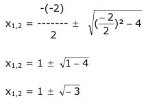
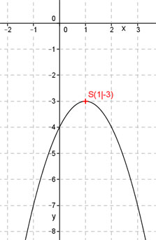

Aufgabe 64 Welche Koordinaten haben der Scheitelpunkt S und die Nullstellen N der Funktion y = -x2 + 2x - 4? y = -x2 + 2x – 4 |:(-1) -y = x2 - 2x + 4 Quadratische Ergänzung : -y = x2 - 2x + 1 – 1 + 4 mit x2 - 2x + 1 = (x – 1)2 -y = (x – 1)2 + 3 |*(-1) y = -(x – 1)2 - 3 Dies ist die Scheitelpunktform. S abgelesen: S(1|-3) Nullstellen: y = 0 0 = -x2 + 2x – 4 |:(-1) 0 = x2 - 2x + 4 p, q – Formel : p = -2 ; q = 4  Der Ausdruck unter der Wurzel ist negativ, deswegen hat diese Funktion keine Nullstellen. (Parabel ist nach unten geöffnet, Zahl vor x2 ist negativ, und der Scheitelpunkt liegt unterhalb der x-Achse.) 